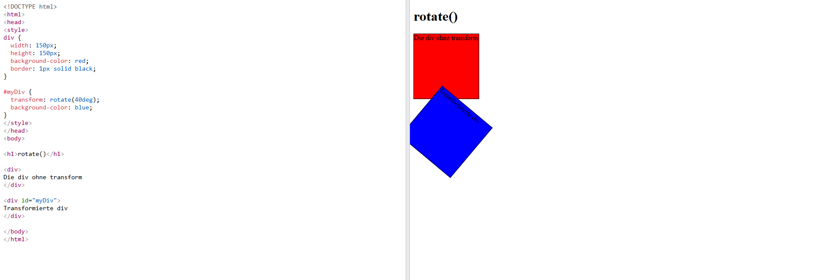

Transforms & Transitions
Einleitung
Dieser Artikel bringt ihnen näher wie man mit den CSS-Funktionen Tansform & Transition HTML-Elemente verändern kann.Mit Transform-Befehlen kann man Elemente bewegen, verzerren, rotieren und in verschiedene Richtungen skalieren.
Mithilfe von Transition-Befehlen kann man die Übergänge zwischen zwei Zuständen eines Elementes kontrollieren.
Erklärung zu Transforms & Transitions
Zuerst gucken wir uns Transform an:Mit transform: translate können wir ein Element verschieben:
transform: translate(X-wert,y-wert)
Der Wert wird in px(pixel) angeben kann aber auch in % angegeben werden
Mit transform: rotate rotieren wir einen Wert im Uhrzeigersinn.
Der übergebene Wert wird kann entweder deg(degrees) oder in turn angeben werden. Zudem kann man gegen den Uhrzeigersinn rotieren, wenn man einen negativen Wert angibt.
transform: rotate(Winkel)
Zudem kann man in 3D rotieren indem mit rotateX(),rotateY() und rotateZ() um die entsprechende Achse rotiert.
Mit transform:scale beeinflussen wir die Größe eines Objektes.
transform: scale(x-Wert,y-Wert)
Man kann auch mit scaleX() oder scaleY() jeweils nur einen Wert verändern.
Mit transform:skew verzerren wir ein Objekt anhand der X und Y Achse.
transform: skew(x-Winkel,y-Winkel)
Die Werte werden wieder deg(degrees) angegeben, zudem kann wie bei transform:scale auch nur die einzelnen Werte verändern, indem man skewX() oder skewY() benutzt.
Außerdem kann man mehrere Transformfunktionen kombinieren und auf einmal verwenden, allerdings sollte man auf die Reihenfolge achten.
Die Transforms könnte man zum Beispiel mit Transitions kombinieren um ein Element auf ihrer Seite zu “animieren”.
Transitions werden verwendet, wenn man den Zustand (sprich Position etc.) eines Elements verändert und dabei einen gesteuerten schrittweisen Übergang haben will.
Transitions erzeugt man, indem man zuerst eine transition: Zeile in sein HTML-Element packt, in der dann angegeben wird wie lange die einzelnen Transitions dauern soll. Wenn man den Wert nicht angibt, wird meistens 0 für den Wert genommen.
transition: width 0.5s, height 1s, background-color 2s, transform 3s;
In diesem Beispiel soll der Übergang für die Breite eine halbe Sekunde dauern, der Höhenübergang vom Element 1 Sekunde, der Farbwechsel 2 Sekunden und der Transformbefehl 3 Sekunden
In ein zweites HTML-Element (z.B. eine Pseudoklasse) schreibt man dann welche Werte sich verändern sollen.
Wie löst man Transitions aus?
Eine Möglichkeit Transitions auszulösen sind “Pseudoklassen”, welche hinter das zweites HTML-Element geschrieben werden
Beispiele für Pseudoklassen sind:
:hover(die Maus hovert über dem Element)
:checked(Checkbox die bestätigt wurde)
:focus(auswählbares Element das grade fokussiert wird, z.B. durch einen Mausklick)
:playing(Wenn ein abspielbares Element am abspielen ist)
Man muss jedoch darauf aufpassen, dass die Pseudoklassen supportet werden, beispielweise wird :playing nur von Apple supportet.
Die Pseudoklasse wird hinter ein HTML-Element geschrieben
div:hover { }
Zusätzlich bieten Transitions noch zusätzlich Funktionen an, um Übergänge besser zu kontrollieren
Transition-timing-function:
Die Transition-timing-function beschreibt wie genau der Übergang ablaufen soll.
Mögliche Optionen sind
transition-timing-function: linear;
Überall gleiche Geschwindigkeit.
transition-timing-function: ease;
Startet langsam und endet langsam, in der Mitte schneller
transition-timing-function: ease-in;
Startet langsam und endet schnell
transition-timing-function: ease-out;
Startet schnell und endet langsam
transition-timing-function: ease-in-out;
Ähnlich wie ease nur mit anderen Werten
Außerdem gibt es die Möglichkeit Transitions zu verzögern.
transition-delay: 3s;
Der Anfang vom Übergang wird um 3 Sekunden verzögert
Beispiele für Transforms & Transitions
(Der ganze Beispielbereich wird noch einmal überarbeitet, wenn wir Zugang zu CSS haben)
Dieses Beispiel zeigt wie man mit transform ein Element rotiert
Die rote Box ist “normal”, während die blaue Box um 40 Grad gedreht ist

Dieses Gif zeigt wie die verschiedenen transition-timing-functions aussehen können
Zusammenfassung
- Sie sind in der Lage Elemente verschieben
- Sie können Elemente skalieren und rotieren (sowohl in 2D als auch in 3D)
- Sie wissen wie man Übergänge erzeugt
- Sie können das Verhalten von Übergängen kontrollieren
- Sie können Transitions mit Transform verbinden